Pizzas doces e salgadas
Rodada após rodada, direto do forno. Bordas recheadas em sabores selecionados — a de camarão é a queridinha da casa.
Campo Grande · Rio de Janeiro · desde 2007
Pizzas doces e salgadas com borda recheada, massas na mesa, petiscos e um buffet livre com carnes, frutos do mar, caldos e comida japonesa. Refrigerante e água liberados.
O carro-chefe
Não é só pizza. O Congresso junta rodízio de pizza, massas servidas na mesa e um buffet livre que muda o jogo — tudo por um preço só, por pessoa.
Rodada após rodada, direto do forno. Bordas recheadas em sabores selecionados — a de camarão é a queridinha da casa.
Servidas na mesa e disponíveis no buffet, com molhos preparados na hora.
Batata frita, batata com queijo e bacon e frango a passarinho circulando o tempo todo.
Comida japonesa, frutos do mar, carnes, caldos, saladas e acompanhamentos à vontade.
Refrigerante e água inclusos no valor do rodízio. Chopp gelado e drinks à parte, no bar.
Quem faz aniversário e leva mais de 10 convidados ganha cortesia. Combine pelo WhatsApp.
Valores e itens podem variar conforme o dia e a disponibilidade. Confirme pelo WhatsApp antes de vir.
A experiência
O Congresso nasceu em 2007 como um bar de bairro e virou o ponto de encontro das famílias da Zona Oeste. Espaço amplo, ar-condicionado, acessibilidade e gente circulando — do almoço de domingo à confraternização da firma.
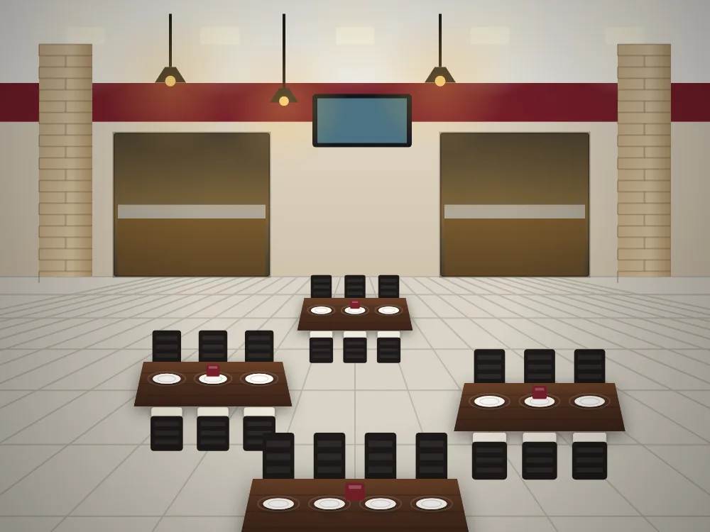
Salão grande, mesas para grupos e jardim de inverno. Ar-condicionado, acesso para pessoas com deficiência e capacidade para receber a família inteira sem apertar ninguém.
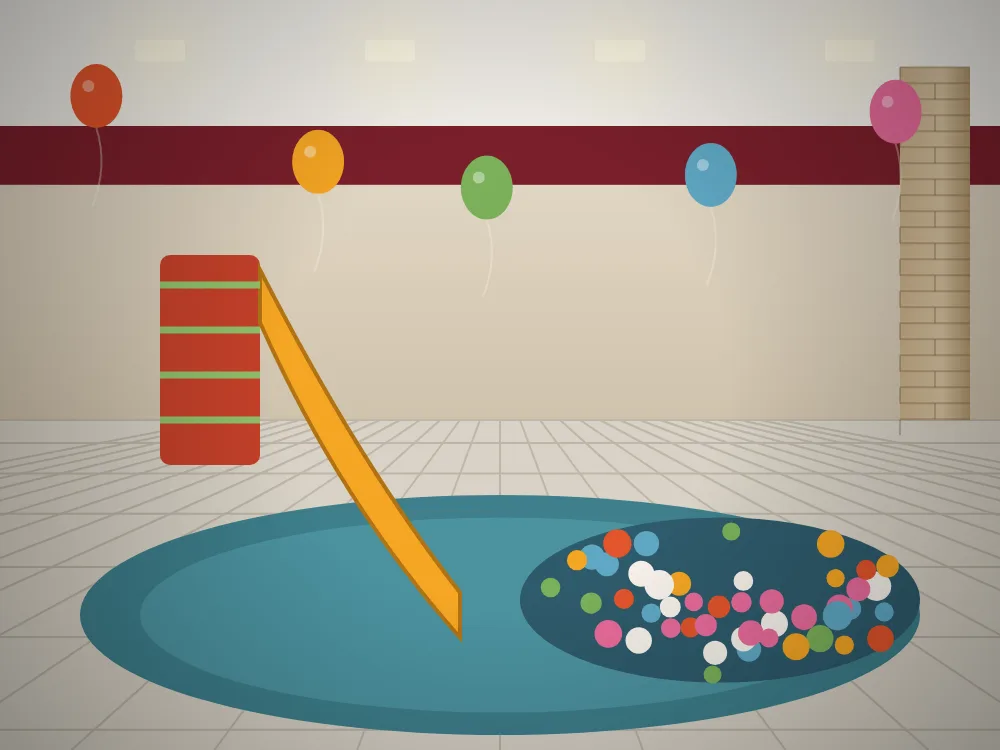
Área kids dedicada dentro do restaurante. Os pequenos brincam, os adultos comem em paz — o motivo número um pelo qual as famílias voltam.
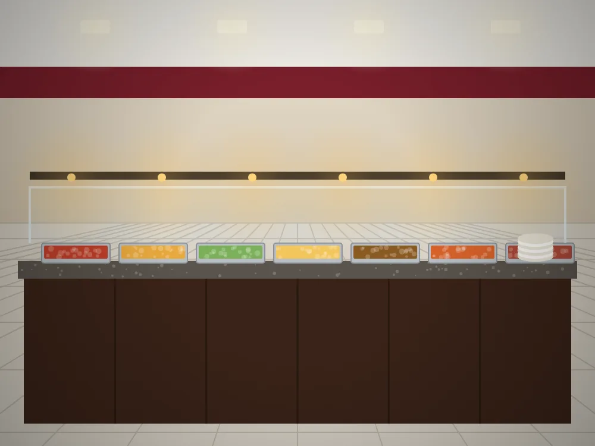
Enquanto as pizzas circulam pela mesa, o balcão fica liberado: comida japonesa, frutos do mar, carnes, massas, caldos e saladas. É o que transforma o rodízio de pizza numa refeição completa.
Cardápio
Tudo abaixo faz parte do rodízio. Além dele, temos carta de bebidas, porções e pratos à la carte no balcão.
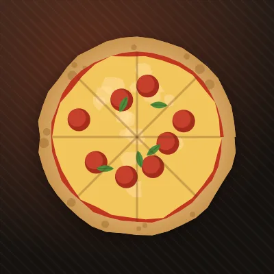
rodízio
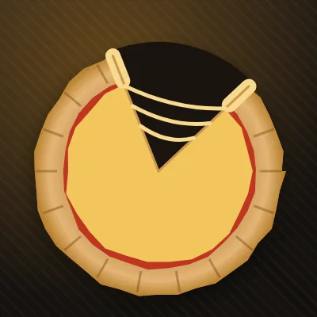
sabores selecionados
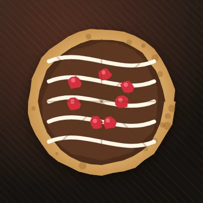
rodízio
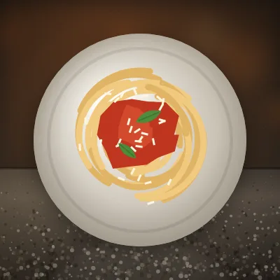
mesa e buffet
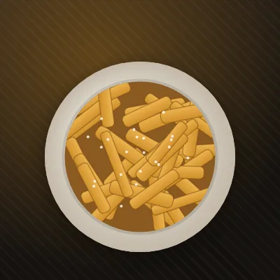
rodízio
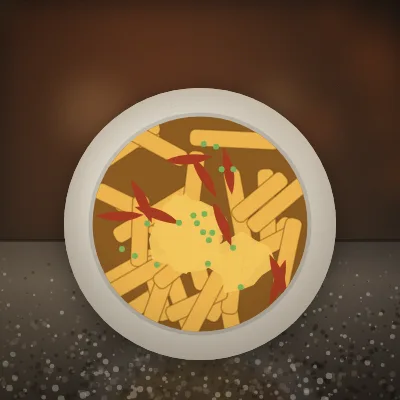
rodízio
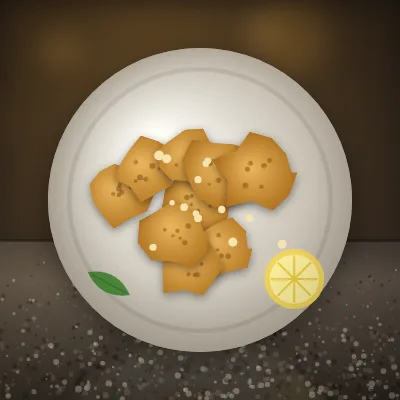
rodízio
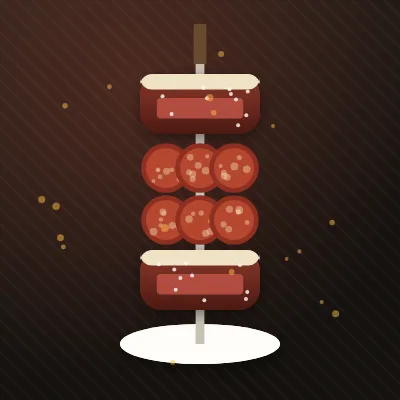
na mesa
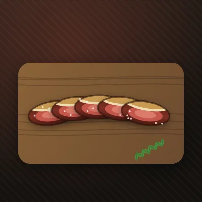
buffet
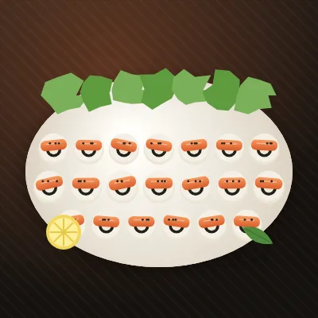
buffet
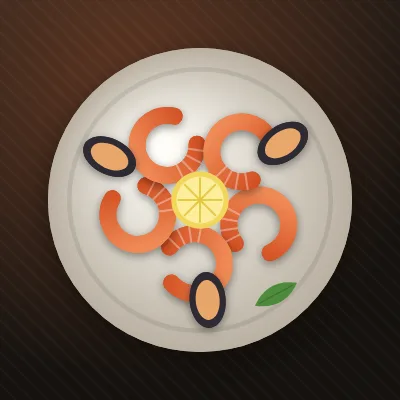
buffet
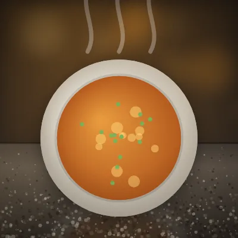
buffet
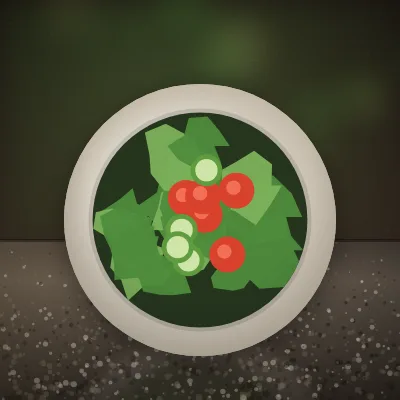
buffet
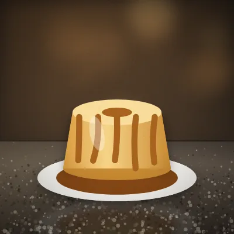
buffet
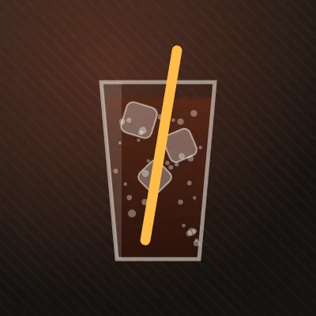
incluso no rodízio
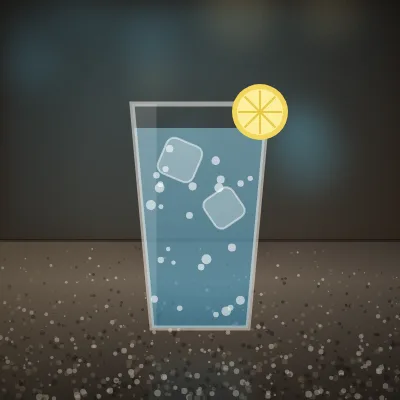
incluso no rodízio
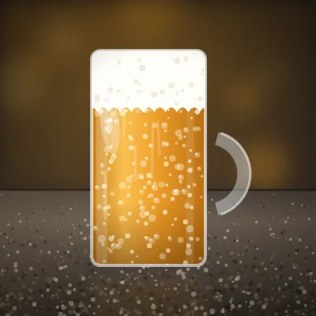
à parte
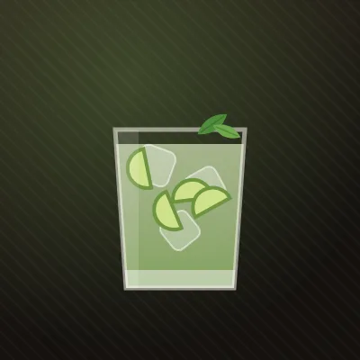
à parte
As imagens são ilustrações feitas para representar o cardápio, não fotos dos pratos servidos. Sabores e itens do buffet mudam conforme o dia.
Mandamos na hora pelo WhatsApp, junto com as promoções da semana.
Eventos
Casamento, 15 anos, aniversário, chá de bebê, formatura, confraternização de empresa e café da manhã corporativo. Você reserva o salão e paga apenas o que consumir — nada de taxa de espaço.
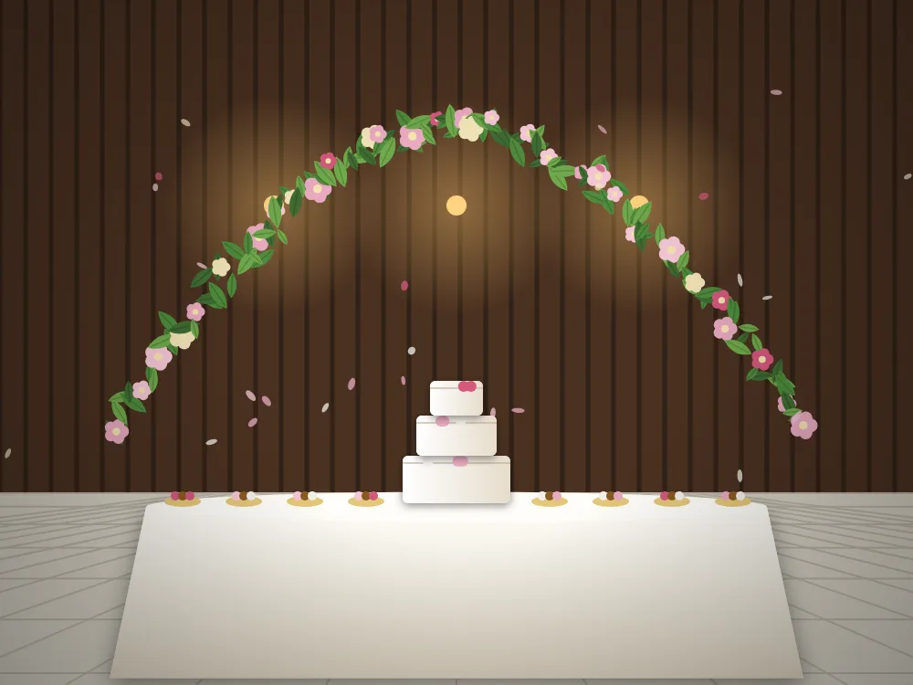
Salão com jardim de inverno e telão, separado do movimento principal.
Sem taxa de locação. O custo é o consumo do seu grupo, combinado antes.
Aniversariante com mais de 10 convidados não paga. Consulte as condições.
Chame no WhatsApp para conhecer o espaço e fechar o orçamento.
Onde estamos
Dúvidas frequentes
R$ 59,90 por pessoa de segunda a quinta e R$ 64,90 às sextas, sábados, domingos e feriados. Refrigerante e água estão inclusos. Confirme os valores do dia pelo WhatsApp.
Pizzas doces e salgadas (bordas recheadas em sabores selecionados), massas na mesa e no buffet, petiscos como batata frita e frango a passarinho, e o buffet livre com comida japonesa, frutos do mar, carnes, caldos e saladas.
Temos condições especiais por faixa etária. Consulte pelo WhatsApp antes de vir com o grupo.
Aceitamos reservas e recomendamos para grupos, fins de semana e feriados. Chame no WhatsApp (21) 98489-9170.
Sim. O salão de eventos tem jardim de inverno e telão, e não cobramos aluguel — você paga apenas o consumo. Aniversariante com mais de 10 convidados tem cortesia.
Dinheiro, cartões de débito e crédito, Pix e vale-refeição (VR). Confirme a bandeira do seu VR pelo WhatsApp.
Sim, temos área kids dentro do restaurante, para as crianças brincarem enquanto os adultos aproveitam o rodízio.
Responde rápido no WhatsApp — reservas, eventos e cardápio completo.
Chamar no WhatsApp